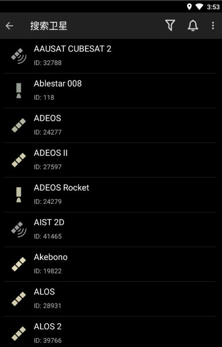

Heavens-Above 一问一答：卫星过顶、日食预报、深空追踪，这款天文工具到底值不值得装
整理一篇关于 Heavens-Above 的快问快答，覆盖卫星追踪精度、夜间模式、日食预报、深空任务等核心问题，天文爱好者和普通用户都能快速上手。
整理一篇关于 Heavens-Above 的快问快答，把你想问的都替你问了。
Heavens-Above 到底是什么？谁需要用？
一句话：它是一款实时卫星追踪和天空事件预报工具，核心功能是告诉你"哪颗卫星什么时候从你头顶飞过，飞多高、飞多久"。
天文爱好者、摄影爱好者、想拍国际空间站过境的人，都需要它。普通用户如果只是好奇今晚天上有什么东西在飞，装一个也挺有意思——抬头看天之前先打开它，心里有数。Heavens-Above官网在全球范围内免费提供服务，有网页版也有手机 App。

怎么安装？有哪些平台？
Heavens-Above 支持Android 和 iOS 两大平台，各应用商店直接搜名字就能下载。不想装 App 的话，网页版功能也很完整，浏览器打开就能用，电脑上查数据反而更方便。
官方下载渠道就是各平台的应用商店和官网，没有第三方捆绑安装包的说法——天文工具这类东西，直接从官方拿最靠谱。网页版不需要注册就能查数据，App 也可以匿名使用，注册账号只是为了同步观测位置和收藏的卫星列表。
最核心的功能是什么？卫星预测怎么用？
输入你的观测位置（自动定位或手动输入经纬度），它就会列出未来几天所有能从你看到的卫星过境事件。每条过境信息包含：升起时间、最高点时刻、落下时间、最大仰角、卫星方位。
仰角是关键指标——仰角越高，卫星在天空中越居中、亮度过渡的时间也越长。国际空间站过境时最大仰角通常在 40° 以上，肉眼可见的亮度可达视星等 -1 到 -3，比星星还亮。选好卫星、设好提醒时间，提前十分钟出门等着抬头就行。

预测准不准？误差有多大？
分情况说。国际空间站这种低轨热门卫星，一周内的预测误差在几秒以内，观测前一天刷一次就够了。提前到 20 天的话，误差可能涨到几分钟——因为低轨卫星受上层大气阻力影响，轨道一直在衰减。
更高轨道的卫星精度更好。哈勃望远镜（530 公里）几周内误差很小，静止轨道卫星（35,786 公里）甚至可以长期稳定预测，几个月后的过境时刻基本不会变。误差来源主要是轨道参数更新延迟和大气模型简化，最实用的建议就一条：观测当天早上刷一次预测，这是保证精度的黄金法则。
夜间观测时为什么要开红屏模式？
人眼从亮环境进入黑暗，需要 20~30 分钟才能完全建立暗适应。这时候任何白色光源——包括普通手机屏幕——都会迅速破坏已经形成的夜视能力，你得再花几十分钟才能恢复。
Heavens-Above 的夜间模式用红底黑字配色，红光波长较长，对负责夜视的视杆细胞刺激最小。开启方法很简单，Android 设置菜单里一键切换，网页版有的会跟随系统暗色模式自动适配。观测前提前十分钟打开应用、开启夜间模式，观测中尽量少看屏幕，看完一条预测就把手机放下，让眼睛回到暗适应状态。
除了卫星还能看什么？日食预报靠谱吗？
日食、月食预报是 Heavens-Above 的另一个重磅功能。Solar Eclipses 页面列出了未来数十年内所有日食事件，包含类型（全食、环食、偏食、全环食）、中心线路径地图、各城市食分、食甚时刻和开始结束时间。月食数据也在同一页面里，裸眼就能观测，不需要滤镜。
日食类型的区别要搞清楚：全食时月球完全遮挡太阳，食分 1.0；环食时月球视直径小一点，留下一个亮环，食分通常 0.95 左右；偏食只遮挡一部分。中国接下来值得关注的日食有：2026 年 8 月黑龙江极东地区可见全食，2027 年 2 月南方部分地区可见环食，2035 年 9 月华北东北可见全食。观测安全提示再说一遍：偏食和环食阶段绝对不能裸眼直视太阳，必须用认证过的日食眼镜或太阳滤镜。
深空任务也能追踪？特斯拉 Roadster 真的在上面？
是的，Heavens-Above 有一个 Solar Escape 页面，专门追踪已经脱离或即将脱离太阳系的探测器。旅行者 1 号和 2 号、Pioneer 先驱者系列、新视野号都在上面，连 SpaceX Falcon Heavy 首飞时送入太阳轨道的那辆红色特斯拉 Roadster 也有交互式轨道动画——你可以看它当前位置、完整轨道演示，还有它什么时候再次接近地球（2047 年）。
还有一个挺有画面感的条目：Celestis Enterprise 纪念任务，2022 年把约 500 位名人的骨灰送入绕太阳轨道，包括《星际迷航》创始人 Gene Roddenberry。深空任务的更新频率比地球轨道卫星低得多，因为它们的轨道不是用 NORAD ID 管理的，而是用 MPC 小行星编号或 JPL Horizons 系统追踪。这些功能和资料，翻一下 Heavens-Above文档就能看到完整说明。
有什么坑要注意？免费吗？
Heavens-Above 是完全免费的，网页版和 App 都不收费，没有内购、没有广告——这在同类工具里算难得的良心。但有几个使用习惯要注意：预测不是百分百准，低轨卫星提前一周以上的预测必须在观测当天刷新，否则可能偏几分钟。位置精度也有影响，10 公里的误差对仰角影响大约 0.1°，人眼基本看不出来，但如果你在山里或海边，还是建议手动确认一下经纬度。
还有，轨道数据来源是美国太空军 Space-Track 系统，热门卫星（ISS、天和号）每天更新数次，普通卫星可能几天才更一次。应用里有自动检查更新的频率设置，可以根据你的使用习惯调整——经常看的话设成一天一次，偶尔看看的话一周一次就够了。
总结一下：如果你对天空感兴趣，Heavens-Above 是一款值得长期装着的口袋工具，卫星预测精度够日常用、日食预报覆盖全、深空追踪有惊喜，而且完全免费无广告。